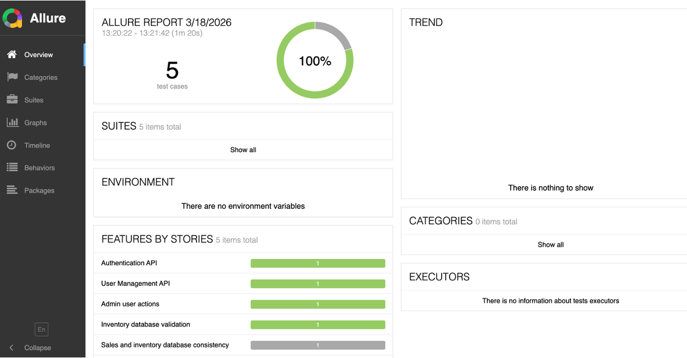
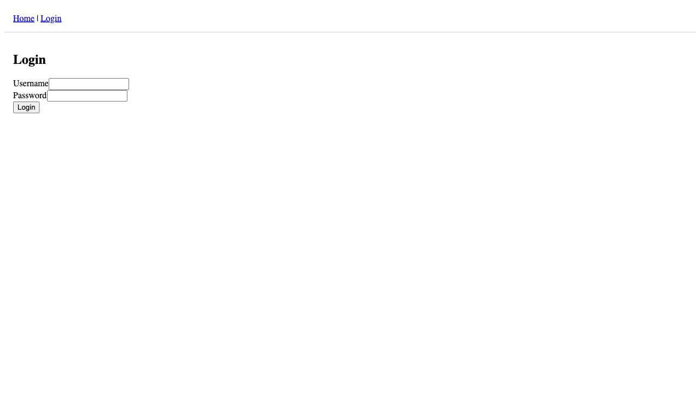
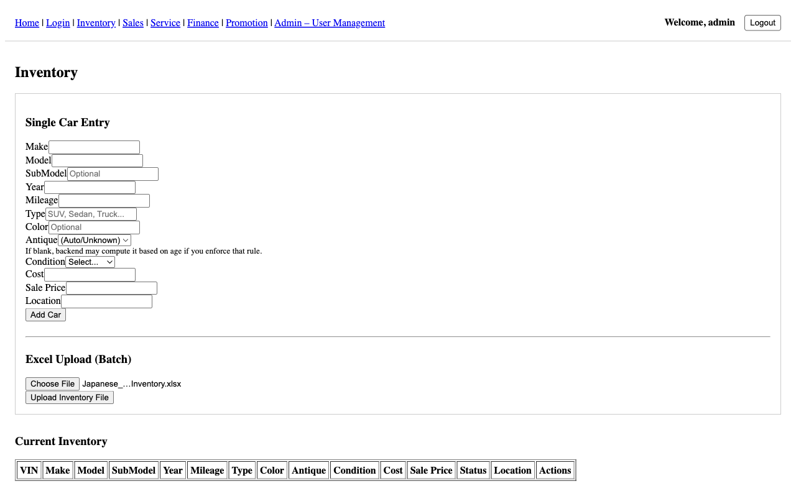

UI Automation
Business workflow coverage through Playwright browser automation and Cucumber BDD scenarios.
This portfolio project demonstrates modern SDET engineering practices using Playwright, Cucumber BDD, Python Behave, PostgreSQL, GitHub Actions, and unified Allure reporting.
Scenario: Admin uploads inventory Excel file
Given admin logs in
When admin uploads inventory Excel file
Then cars should be added to inventory
And cars should exist in the databaseA real-world test architecture validating a React frontend, FastAPI backend, and PostgreSQL database across multiple automation layers.
Business workflow coverage through Playwright browser automation and Cucumber BDD scenarios.
REST endpoint validation using Python Behave, fixtures, and business-rule assertions.
Direct PostgreSQL checks to confirm state transitions after UI and API operations.
Automated pipeline orchestration in GitHub Actions with reporting and artifact generation.

Multi-stage execution validates API, UI, and database layers before producing a unified report.

Allure aggregates test results into a single dashboard with execution details, failures, and traceability.


